진주도둑들 · 보상 누락과 지급 조건
보상 오류를 문서로 전달한 뒤 중도 이탈·클리어·패배의 지급 결과를 비교했습니다. 후속 검사에서는 과거 소스를 다시 빌드해 패배 보상 수정 전후를 대조했습니다. 별도의 음수 비용 수정 후보는 경계 조건을 확인했으며, 출시 반영은 확인 대기입니다.
담당 범위와 수정 근거 보기 ↗이도언GAME QA PORTFOLIO
여러 1인 개발 프로젝트에서 기획·구현·테스트를 함께 경험한 이도언입니다.
기획한 규칙이 실제 플레이에서도 지켜지는지 살피고,
진행·보상 오류를 보고한 뒤 연결된 흐름까지 재검증합니다.
시작 상태와 입력 조건을 맞춰 기대 결과와 실제 결과를 다시 대조했습니다. 수정한 기능과 연결된 보상·저장·재접속 흐름을 확인하고, 검증한 범위와 남은 항목을 구분해 기록했습니다.
보상 오류를 문서로 전달한 뒤 중도 이탈·클리어·패배의 지급 결과를 비교했습니다. 후속 검사에서는 과거 소스를 다시 빌드해 패배 보상 수정 전후를 대조했습니다. 별도의 음수 비용 수정 후보는 경계 조건을 확인했으며, 출시 반영은 확인 대기입니다.
담당 범위와 수정 근거 보기 ↗새 저장 상태에서 키보드·버튼으로 클리어, 일시정지, 되돌리기 흐름을 다시 확인했습니다. 재클리어 시 보상이 중복 지급되지 않는지, 재접속 후에도 진행 기록과 보유 재화가 유지되는지 저장값과 화면을 대조했습니다.
화면·관찰값·실행 스크립트 보기 ↗연구 가격·구매 조건과 저장 실패·복원, 접기 동작을 조건별로 다시 검사했습니다. 같은 조건으로 재실행한 결과를 대조하고, 검증 대상 소스와 실행 로그를 함께 남겨 어떤 상태에서 확인한 결과인지 추적할 수 있게 했습니다.
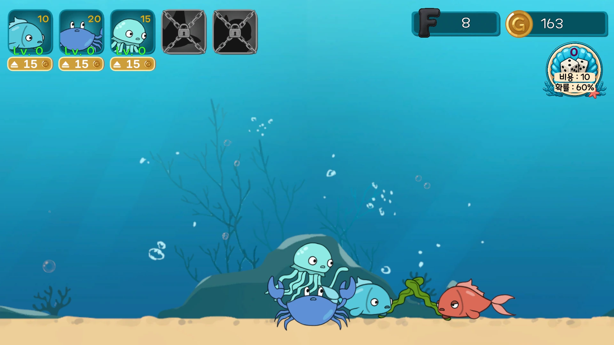
담당 · 발견 / 문서 보고 / 수정 후 재검증
| 종료 상황 | 확인 결과 |
|---|---|
| 중도 이탈 | 획득 재화 미지급 |
| 정상 클리어 | 획득 재화 지급 |
| 패배 | 획득 재화 지급 |
개발 당시 수행 경험입니다. GitHub 수정 이력과 담당 역할을 함께 제시하며, 당시 원본 배포 파일과 반복 기록은 보관되어 있지 않습니다. 11월 10일에 과거 소스를 다시 빌드한 패배 보상 비교 결과는 프로젝트 상세에 별도로 기록했습니다.
직접 만들며 익힌 [규칙과 구조]를 바탕으로, // [기획·구현·플레이] 관점에서 조건을 찾고, // [위험한 흐름부터] 꼼꼼히 검증합니다.
메이플키우기 자동화는 반복 성장과 재화 소모를 확인하기 위한 3인 팀 프로젝트입니다. 버튼 탐지·클릭·OCR 재화 비교와 예외 처리를 맡았습니다. 보관한 시연 영상에서 실행 흐름을 확인할 수 있습니다.
반복 클릭을, 검증 가능한 실행 흐름으로.
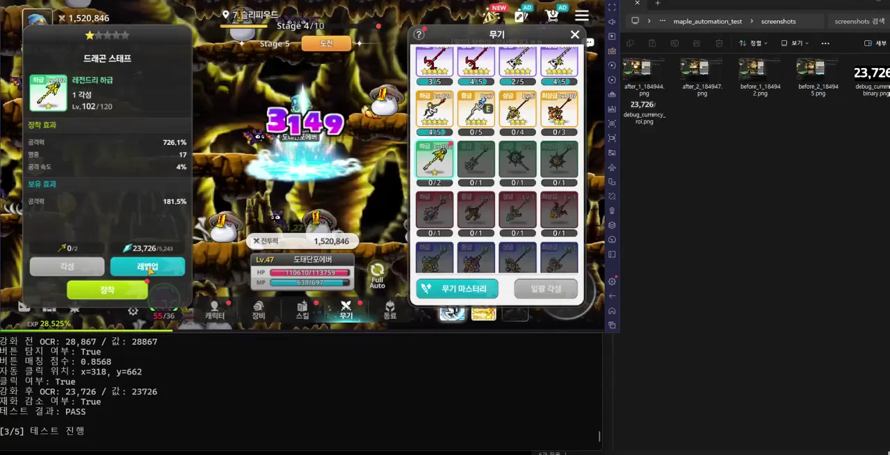
강화의 성공과, 테스트의 성공을 구분합니다.
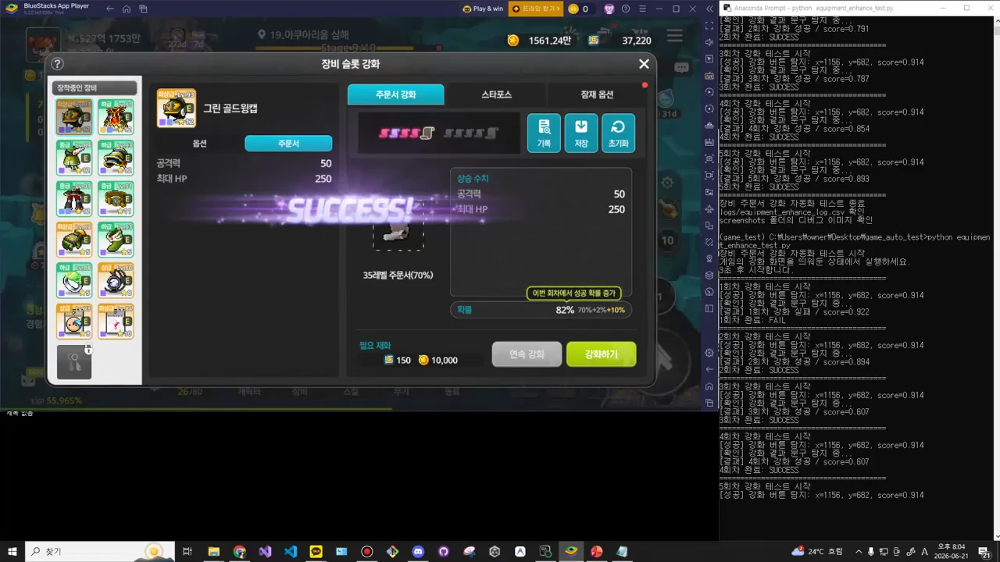
클릭이 됐는지보다, 얼마가 차감됐는지.
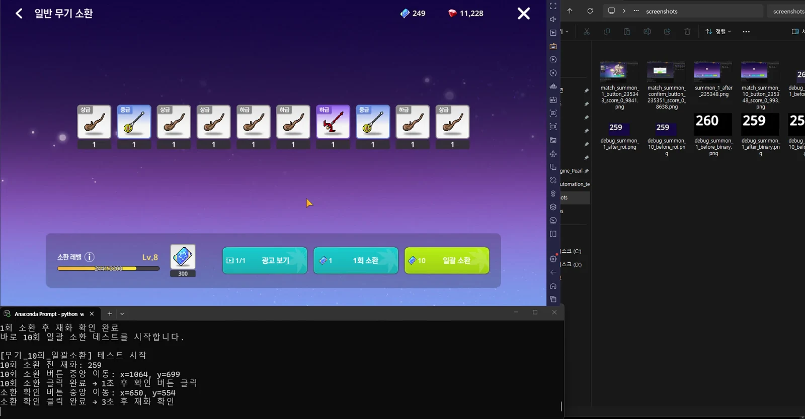
예상 밖의 화면에서도, 원인을 남깁니다.
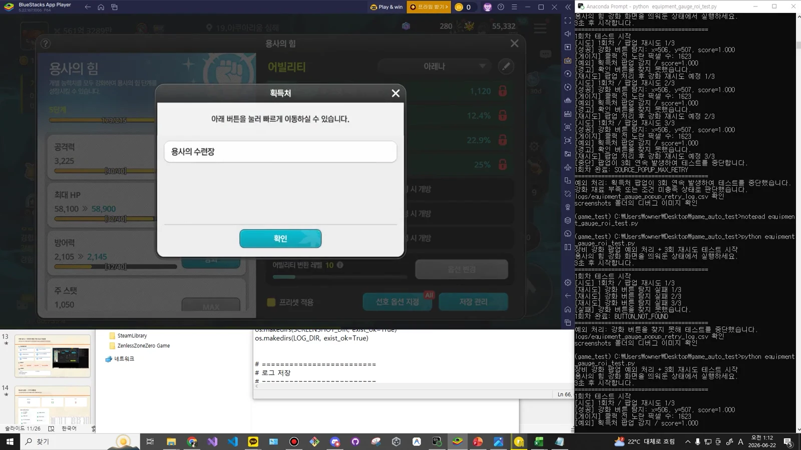
1인 개발에서 익힌 기획·구현 경험으로 테스트 조건을 찾습니다.
기획한 규칙과 실제 동작을 연결해 보고, 진행 차단·재화 손실·저장 오류를 우선 확인합니다. 카드에서 검증 범위를, 상세보기에서 담당 역할과 조건별 결과를 볼 수 있습니다.
완성 게임 4개 · 1인 개발 1개 · 팀 개발 3개
데굴데굴 퍼즐(1인), 진주도둑들(4인 팀), Rushitadel(3인 팀), 쓰레기 집게 소년(4인 팀)을 완성했습니다. 개발 중인 게임과 보드게임·서비스 프로토타입·자동화 프로젝트는 이 수치에서 제외했습니다.
2026.11.10 기준 보고서 · 2026.11.06 실행 회차 집계 · 6개 프로젝트 / 설계 45건 / 실행 28건 / 통과 27건 / 실패 1건 / 미실행 17건. 게임 DLL 로직 20건·STILLDRAWN WebGL UI 3건·GreenWay Figma UI 5건의 합계입니다. 특정 조건의 실행 결과이며 전체 게임의 품질 통과율은 아닙니다.
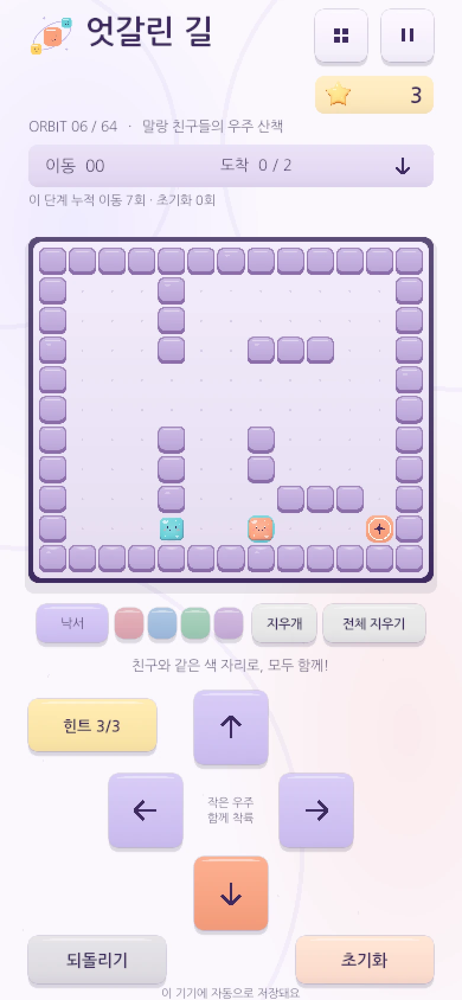
한 번의 방향 입력으로 친구들을 함께 움직여 같은 색의 목표에 도착시키는 중력 퍼즐입니다.
QA · 되돌리기·초기화·완료 판정되돌리기·완료 로직과 첫 단계의 보상·저장 흐름 확인
제작 환경 Unity · C#
담당 범위 1인 개발 · 기획·구현·테스트·itch.io 공개
한 번의 방향 입력으로 친구들을 함께 움직여 같은 색의 목표에 도착시키는 중력 퍼즐입니다.
로직 4건 PASS · 화면 3건 미실행
되돌리기 시 좌표·이동 횟수 복원과 두 목표의 동시 완료를 확인했습니다.
포탈이나 크기 변환 후 되돌리기를 사용했을 때 위치·크기·클리어 판정이 함께 복원되는지 살펴볼 수 있습니다.
2026.11.10 · 5종 × 3회 / 15회 PASS
Windows 11 · Chrome 157.0.8103.38 · WebGL 1.2.1 보관 패키지 · 900×900. 별도 브라우저 저장에서 랭킹 참여 없이 실행했습니다. 게임 완료 함수를 호출하지 않고 키보드와 마우스를 입력했으며, 저장값을 읽어 기대값과 대조했습니다.
첫 단계 F0를 대상으로 한 검사입니다. 여러 화물의 공동 이동·크기 변환·실제 휴대폰 조작과 모든 단계의 통과를 의미하지 않습니다. 첫 클리어 사진은 같은 패키지의 별도 캡처 회차에서 보상 연출 종료 후 촬영했습니다.
사전 조건 1B 배치 / 두 화물 시작 좌표 (8,1), (1,1)
기대 두 화물이 각자의 시작 칸에 있고 이동 횟수는 0이다.
관찰 두 화물의 좌표가 (8,1)·(1,1) → (2,1)·(1,1) → 시작 좌표로 복원됐다. 이동 횟수 0.
사전 조건 같은 1B 배치, 초기 위치와 크기
기대 6회 이동 후 두 화물이 각 목표 좌표에 있고 완료 판정은 참이다.
관찰 6회 이동 후 좌표 (11,1)·(7,6). 완료 판정이 참으로 바뀌었다.
사전 조건 R01 변환 배치, 시작 크기 1
기대 크기는 1, 위치는 시작 칸, 이동 횟수는 0으로 돌아간다.
관찰 R01에서 크기 1 → 2를 확인했다. 리셋 후 시작 좌표·크기 1·이동 0회로 복구됐다.
사전 조건 1B 초기 상태, 메뉴 일시정지 설정
기대 요청이 거절되고 이동 횟수는 0이다.
관찰 메뉴 정지 중 입력은 거절됐다. 이동 횟수 0.
P1 · 이동·크기 변환·되돌리기 후 위치와 이동 횟수, 클리어 판정이 함께 복원되는지 확인한다. 진행 오류는 퍼즐 해법과 기록에 직접 영향을 준다.
확인한 범위 PZ-01~04 · 공동 이동 되돌리기, 동시 목표 완료, 크기 리셋, 정지 중 입력 거절의 로직 결과를 확보했다.
다음 검증 실행 → 스테이지 선택 → 이동·되돌리기 → 클리어 → 재접속을 실제 입력으로 검증한다. PC와 보유 모바일 기기의 입력 방식을 각각 기록한다.
남은 확인 공동 이동 후 되돌리기, 클리어 기록의 단계 목록 반영, 크기 변환 후 초기화의 화면 테스트 3건과 기기 간 비교는 추가 확인 대상이다.
수정·배포 판단 복구 불가능한 진행 막힘·완료 오판·진행 유실이 재현되면 동일 스테이지와 인접 규칙을 함께 재검증한다.
후속 화면 테스트 · 케이스별 실행 상태
화면 절차 미실행
화면 절차 미실행
화면 절차 미실행
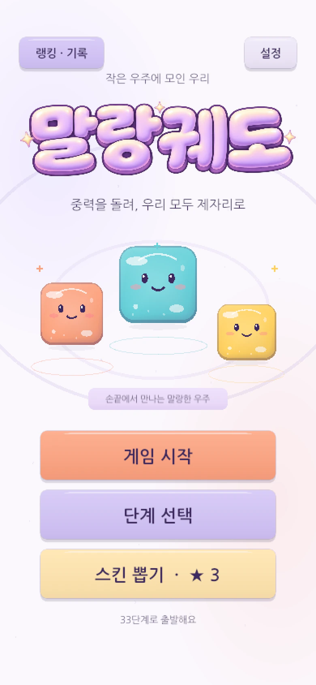
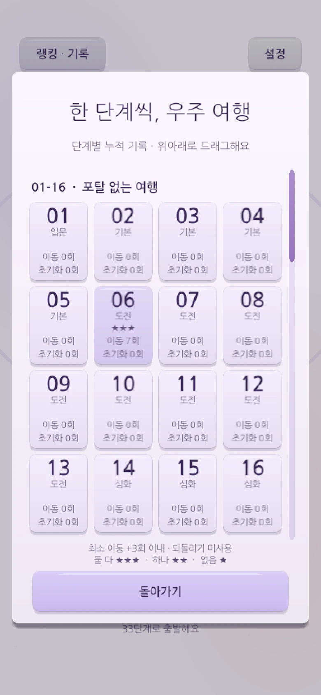
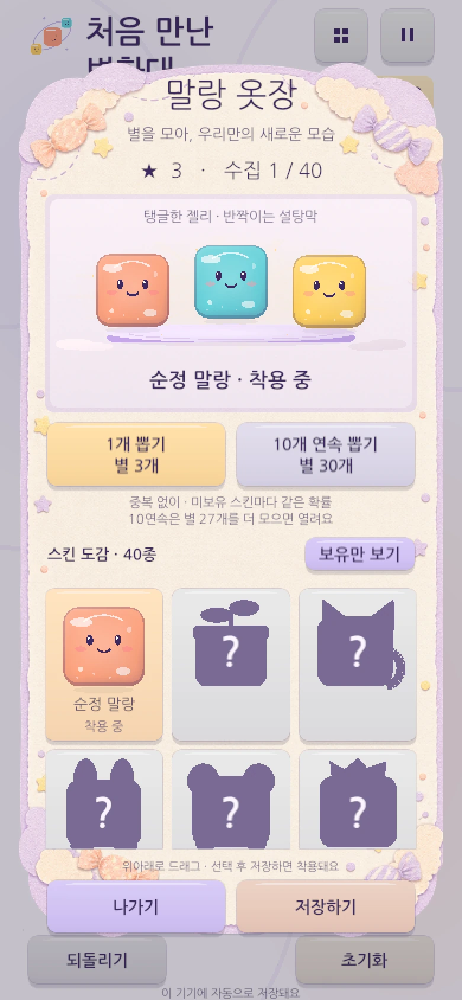
덱을 편성한 뒤 유닛을 소환하고 강화해 웨이브와 보스를 상대하는 게임입니다.
QA · 재화 차감·종료 보상 회귀보상 오류 보고·재검증 · 음수 비용은 수정 후보 검증, 출시 반영 대기
제작 환경 Unity · C#
담당 범위 4인 팀 · 시스템 기획·출시 후 대응·보상 오류 보고와 재검증
덱을 편성한 뒤 유닛을 소환하고 강화해 웨이브와 보스를 상대하는 게임입니다.
수정 전후 빌드 비교 · 협업 사례 3건
음수 비용 수정 후보와 패배 보상 과거 수정 빌드를 비교했습니다. 정상·경계 조건과 저장 후 재접속 결과를 함께 제시합니다.
소환·강화를 연속으로 선택했을 때 골드 차감과 유닛 상태가 일치하는지 살펴볼 수 있습니다.
보상 오류를 문서나 스프레드시트로 정리해 전달했습니다. 수정 이후 중도 이탈·클리어·패배의 결과를 비교하고, 지급 여부를 다시 확인했습니다.
DEF-001 · 음수 비용 방어 원본 코드 빌드에서 비용 -5를 전달하면 골드가 0 → 5로 증가했습니다. 음수·NaN·무한대 비용을 거절하는 수정 후보에서는 요청을 거절하고 0을 유지했습니다.
회귀 결과 음수·0·정상 비용·전액 차감·잔액 부족·연속 2회 차감·NaN·양/음의 무한대, 9조건 × 3회. 원본 18 PASS / 9 FAIL → 수정 후보 27 PASS / 0 FAIL. 반환값·잔액·원래 GoldUI 표시를 대조했습니다.
판정 수정 후보 검증 완료 / 출시 반영 미확인. 비용을 컴포넌트에 직접 전달한 검사이며, 일반 구매 버튼을 통해 음수 비용에 도달하는지는 아직 확인하지 않았습니다. 잠정 S3·P3를 유지합니다.
기존 미네랄 100에서 일반 적 3마리를 처치해 45를 누적했습니다. 수정 전에는 패배 결과에 45가 표시되어도 지갑은 100이었고, 수정 후에는 145가 되어 선택 화면 복귀·프로세스 재시작 후에도 유지됐습니다.
클리어·중도 이탈·획득 0 패배·패배 결과 중복 호출·45 획득 후 패배를 각각 3회 실행했습니다. 수정 전 9 PASS / 6 FAIL → 수정 후 15 PASS / 0 FAIL. 별도 프로세스 재시작은 각 빌드 1회: 수정 전 100(FAIL), 수정 후 145(PASS).
원인과 수정 패배 처리에서 빠졌던 누적 보상 반영 호출을 추가한 실제 Git 변경을 비교했습니다. 수정 전 b71d2db → 수정 후 2cc97a7 ↗
담당 역할 보스를 처치해도 진주 보상이 지급되지 않는 문제를 발견·보고하고, 수정 후 재검증을 담당했습니다.
수정 내용 보상 시스템의 보스 판별 조건에 오징어·해마·상어 등 보스 이름을 추가한 변경이 기록되어 있습니다.
담당 역할 스테이지 패배 후 전투 중 획득한 재화가 보유량에 반영되지 않는 문제를 발견·보고하고, 수정 후 재검증을 담당했습니다.
수정 내용 스테이지 패배 처리와 패배 결과 UI에 누적 보상을 지갑에 반영하는 호출을 추가한 변경이 기록되어 있습니다.
담당 역할 스테이지 도중 나가도 획득 보상이 남는 문제를 발견·보고하고, 수정 후 재검증을 담당했습니다.
수정 내용 적 처치 즉시 지갑에 재화를 반영하던 처리를 전투 중 누적 후 클리어 시 지급하도록 변경했습니다. 지급 후 누적액을 초기화하는 처리도 추가되었습니다.
재검증 범위 수정 후 중도 이탈·정상 클리어·패배의 세 가지 종료 상황에서 보상 지급을 비교했습니다.
확인 결과 중도 이탈 시에는 획득 재화가 지급되지 않고, 정상 클리어와 패배 시에는 획득 재화가 지급되는 것을 확인했습니다.
사전 조건 재화 컴포넌트에 골드 15를 지급, 시간 수익 갱신 없음
기대 성공을 반환하고 잔액은 정확히 0이다.
관찰 성공 반환. 골드 15 → 0.
사전 조건 골드 0, 시간 수익 갱신 없음
기대 실패를 반환하고 잔액은 0이다.
관찰 실패 반환. 골드 0 → 0.
사전 조건 골드 0, 비용 인자를 직접 공급하는 단위 검사
기대 유효하지 않은 비용은 거절된다. 골드가 지급되지 않고 잔액은 0이다.
관찰 성공 반환. 골드 0 → 5로 증가했다.
사전 조건 미네랄 지갑 0, 요구량 100
기대 차감 요청이 거절되고 미네랄은 0이다.
관찰 미네랄 차감 실패. 0 → 0.
2026.11.06 로컬 재화 메서드 검사에서 잔액 0에 비용 -5를 전달하자 성공을 반환하고 골드가 5로 증가했습니다. 해당 입력은 1회 실행해 1회 재현했습니다.
영향도 조사 2026.11.10 코드 검토에서 강화는 음수 비용을 거절하고, 도박은 비용을 0 이상으로 보정하는 것을 확인했습니다. 소환은 일부 경로에서 보정하지만 비용표 값을 그대로 사용하는 경로도 있어, 해당 데이터와 실제 UI 입력을 추가 확인해야 합니다.
현재 판단 메서드 입력 방어 결함으로 관리합니다. 심각도 S3·우선순위 P3는 잠정값이며, 일반 플레이에서 재화 증식이 재현되는지와 영향을 받는 모드를 확인한 뒤 재분류합니다.
추가 UI 회귀 비용 경계 9조건은 수정 후보에서 검증했습니다. 다음으로 실제 구매 버튼을 통해 시간 수익·유닛 생성·강화 단계와 차감액을 함께 대조합니다.
P1 · 정상 구매와 잔액 부족에서 골드·유닛·강화 단계가 함께 바뀌는지 확인한다. DEF-001은 일반 구매 경로의 입력 범위를 추적해 영향도를 판정한다.
확인한 범위 PE-01~04 · 재화 메서드 직접 호출에서 통과 3건, 음수 비용 입력 실패 1건을 기록했다.
다음 검증 덱 → 전투 소환 → 강화 순서로 표시 비용과 실제 잔액을 대조한다. 자동 골드 수익을 통제하거나 수익량을 별도로 기록해 차감액을 계산한다.
남은 확인 음수 비용의 실제 구매 UI 도달 가능성과 출시 빌드 영향은 확인 대기다. 수정 후보의 입력 경계 회귀 결과는 위 빌드 비교에 별도 기록했다.
수정·배포 판단 실제 플레이에서 재화 증식·무상 구매가 재현되면 영향도를 재분류한다. 수정 후보의 입력 경계 회귀는 완료했다. 실제 구매 UI의 도달 가능성과 출시 반영 여부를 확인한 뒤 결함 종료를 판단한다.
후속 화면 테스트 · 케이스별 실행 상태
화면 절차 미실행
화면 절차 미실행
화면 절차 미실행
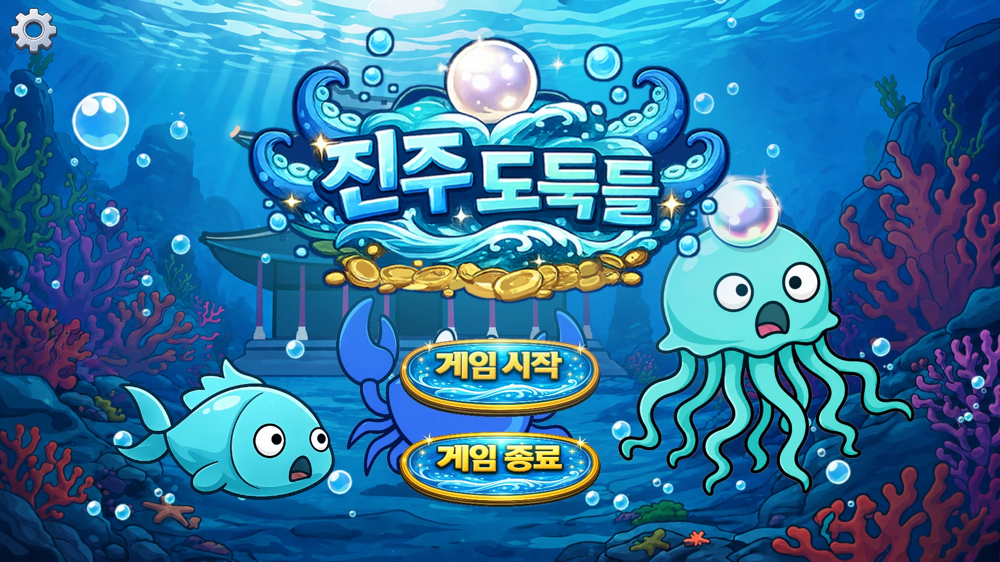
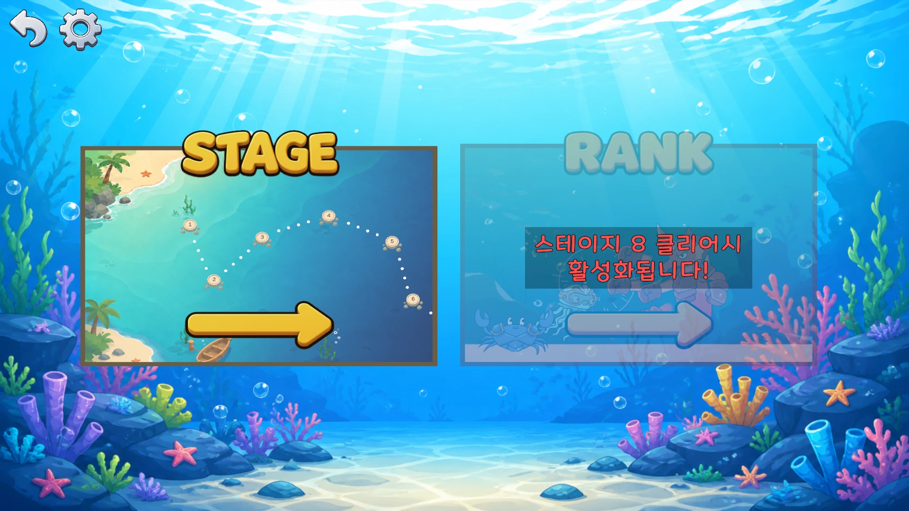
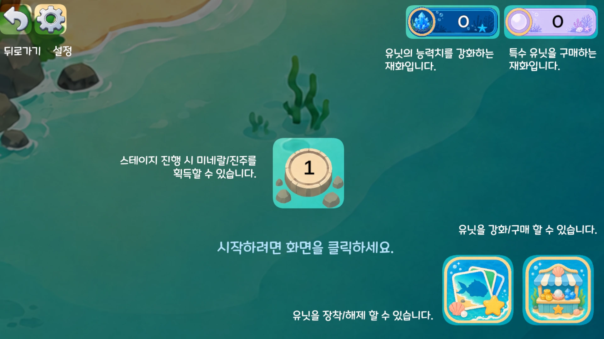
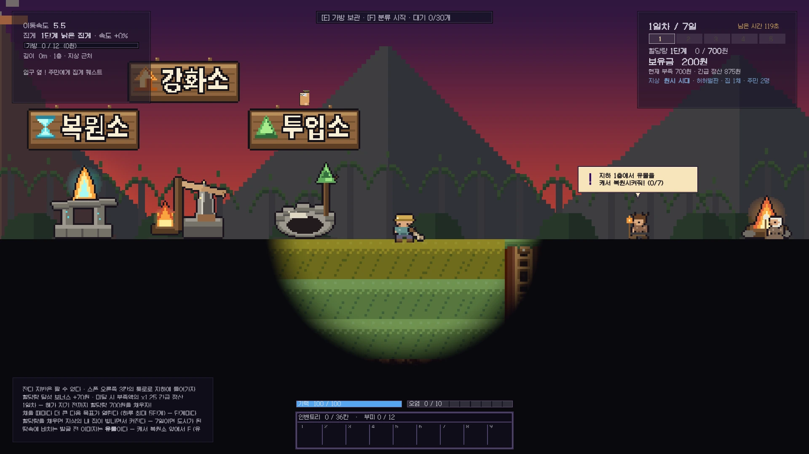
제한된 하루 동안 지하에서 수집한 쓰레기를 분류해 수익을 만들고, 다음 탐색을 준비하는 게임입니다.
QA · 분류 보상·대기열 정합성중복 보상·시간초과·대기열 경계 로직 확인 · 화면 흐름 미실행
제작 환경 Unity · C#
담당 범위 4인 팀 · 핵심 콘셉트·경제 구조 기획·시스템 구현
제한된 하루 동안 지하에서 수집한 쓰레기를 분류해 수익을 만들고, 다음 탐색을 준비하는 게임입니다.
로직 4건 PASS · 화면 3건 미실행
중복 제출 거절, 최대 30개 수용을 확인했습니다.
가방이 가득 찬 상태에서 수집이나 투입을 시도할 때 보유량·대기열·정산 금액이 일치하는지 살펴볼 수 있습니다.
사전 조건 대기열 0개, 작업대 세션 닫힘
기대 열기 요청이 거절되고 세션은 닫힘 상태다.
관찰 대기 0개. 열기 요청이 거절되고 Closed 상태가 유지됐다.
사전 조건 플라스틱 12개, 품목 가치 100, 오염도 0
기대 대기는 11개, 지급 호출은 1회다. 두 번째 입력은 거절되고 오염도는 0이다.
관찰 12개 중 1개가 처리되어 11개가 남았다. 중복 제출은 거절됐고 보상 1회, 오염도 0.
사전 조건 첫 정답 후 대기 11개, 보상 1회
기대 시간초과로 한 개가 처리되어 10개가 남는다. 오염도는 2, 보상 호출은 1회다.
관찰 시간초과 발생. 대기 10개, 오염도 2, 누적 보상 호출 1회.
사전 조건 빈 대기열, 보관 한도 30개
기대 30개만 수용되고 남은 용량은 0이다.
관찰 31개 중 30개 수용. 남은 보관 용량 0.
P1 · 정답·시간초과·연속 입력에서 보상이 한 번만 지급되는지 먼저 확인한다. 재화 오류는 다음 탐험의 성장과 난이도에 누적된다.
확인한 범위 TR-01~04 · 빈 대기열, 정답과 중복 제출, 시간초과, 최대 수용량의 게임 로직 결과를 확보했다.
다음 검증 실제 화면에서 수집 → 분류 → 보상 확인 → 강화 → 인벤토리 재진입을 수행하고, 전후 수량·재화·오염도와 조작 영상을 기록한다.
남은 확인 인벤토리 재진입, 분류 UI 입력, 잔액 부족 강화의 화면 테스트 3건은 미실행이다.
수정·배포 판단 중복 보상·수집물 유실·진행 불가가 재현되면 배포 전 수정과 동일 조건 재검증을 우선한다.
후속 화면 테스트 · 케이스별 실행 상태
화면 절차 미실행
화면 절차 미실행
화면 절차 미실행
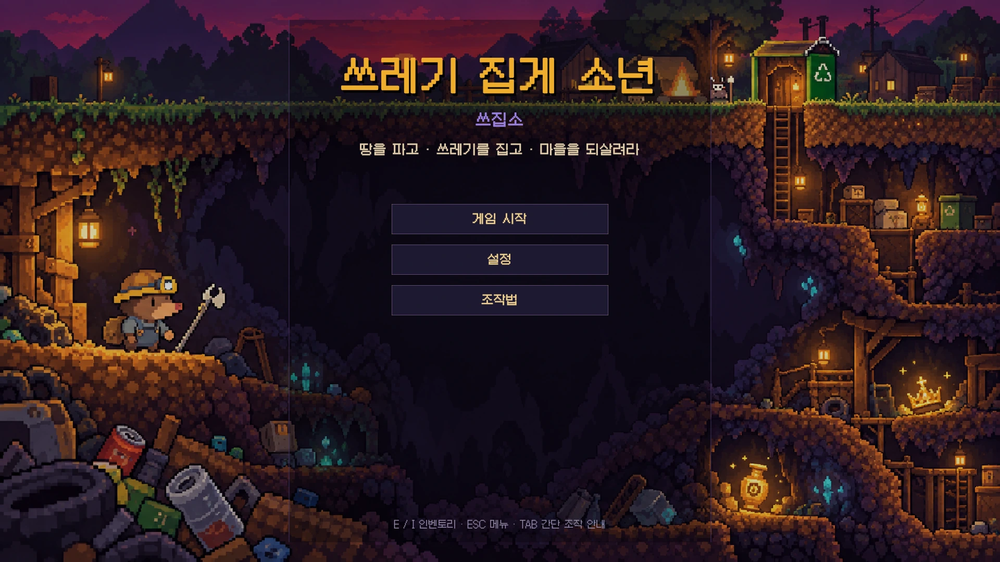
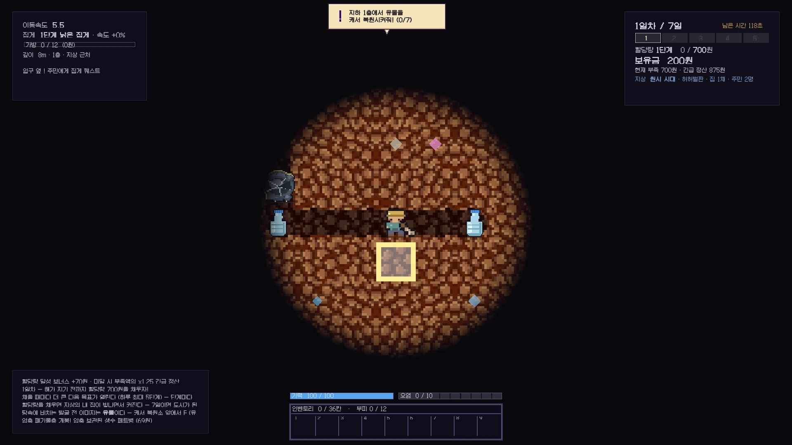
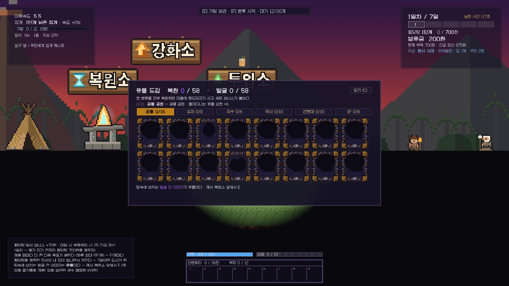
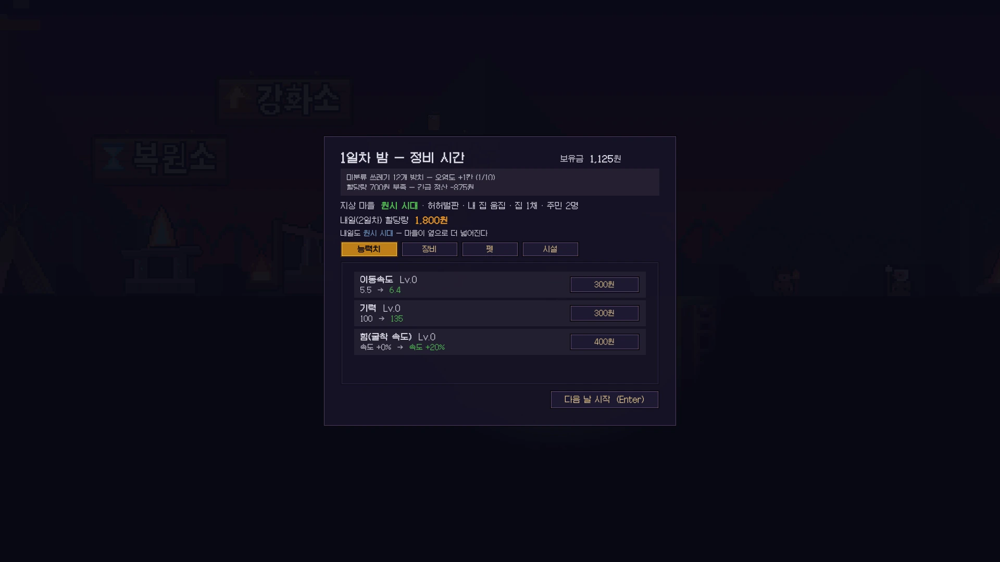
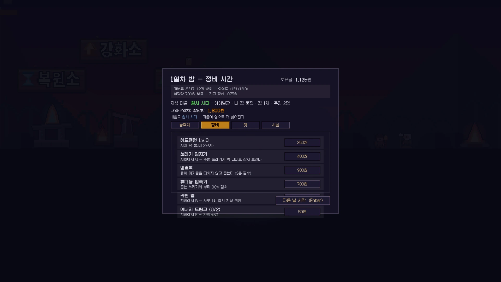
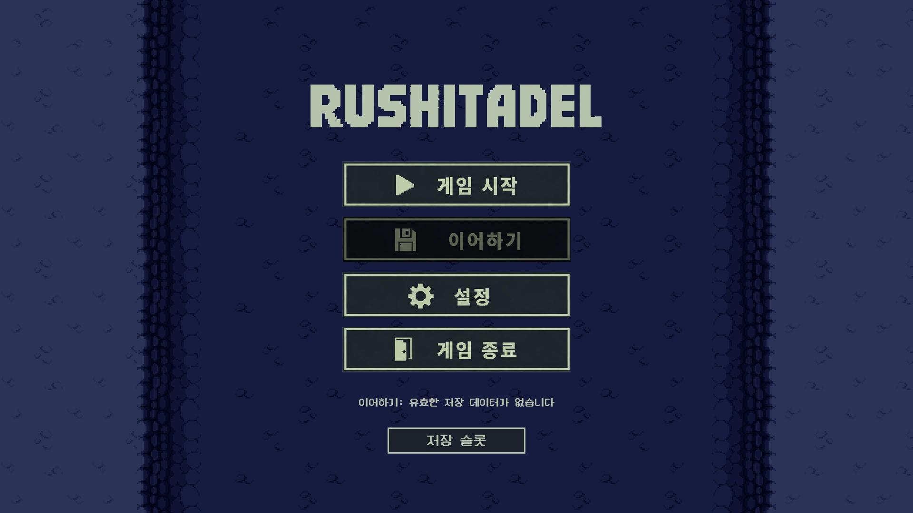
전진하는 전장에서 적을 막고 포탑과 증강을 선택해 전투 구성을 바꾸는 디펜스 게임입니다.
QA · 동력 경계값·전투 상태 보존동력 하한·상한·회복 임계값 확인 · 전투·저장 화면 흐름 미실행
제작 환경 Unity · C#
담당 범위 3인 팀 · 포탑 성장·증강과 전투 시스템 기획
전진하는 전장에서 적을 막고 포탑과 증강을 선택해 전투 구성을 바꾸는 디펜스 게임입니다.
로직 4건 PASS · 화면 3건 미실행
하한·상한과 회복 임계값을 검사했습니다. 보스 영상은 패턴 소개 자료입니다.
보스 공격 예고와 실제 피격 시점이 맞는지, 레벨업 선택 후 전투가 정상적으로 이어지는지 살펴볼 수 있습니다.
사전 조건 최대 동력 100, 회복 임계 비율 0.6
기대 동력은 0으로 보정되고 회복 중이다.
관찰 입력 -2 → 동력 0. 회복 중(Recovering)으로 복원됐다.
사전 조건 최대 동력 100, 회복 임계값 60
기대 59가 유지되며 회복 중 상태가 유지된다.
관찰 동력 59, 회복 중(Recovering)을 유지했다.
사전 조건 최대 동력 100, 회복 임계값 60
기대 동력은 60이며 준비 상태로 전환된다.
관찰 동력 60에서 준비(Ready) 상태로 바뀌었다.
사전 조건 최대 동력 100, 회복 임계값 60
기대 동력은 100으로 제한되고 준비 상태다.
관찰 입력 110 → 동력 100. 준비(Ready) 상태다.
P1 · 일시정지·사망·재시작·이어하기에서 전투와 저장 상태가 어긋나는지 확인한다. P2 · 동력 경계값과 회복 전환을 검사한다.
확인한 범위 RU-01~04 · 동력 하한·상한과 회복 임계값의 게임 로직 결과를 확보했다.
다음 검증 실제 전투에서 정지 전후 HP·동력·적 위치를 대조하고, 슬롯 선택 → 새 런 → 저장 → 이어하기를 같은 슬롯에서 재검증한다.
남은 확인 슬롯 보존·포탑 변형 확정·일시정지 중 전투 보존의 화면 테스트 3건은 미실행이다.
수정·배포 판단 정지 중 피해 누적, 다른 슬롯 덮어쓰기, 이어하기 불가가 재현되면 수정 후 전투·저장 경로를 함께 회귀 확인한다.
후속 화면 테스트 · 케이스별 실행 상태
화면 절차 미실행
화면 절차 미실행
화면 절차 미실행
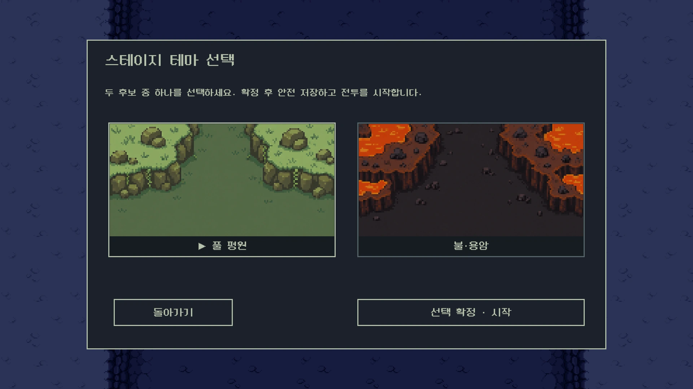
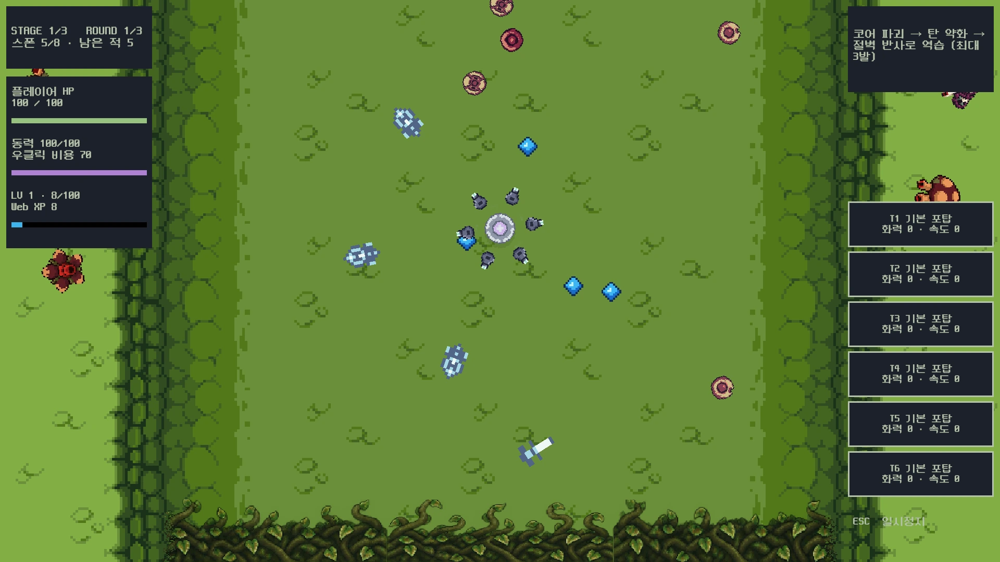
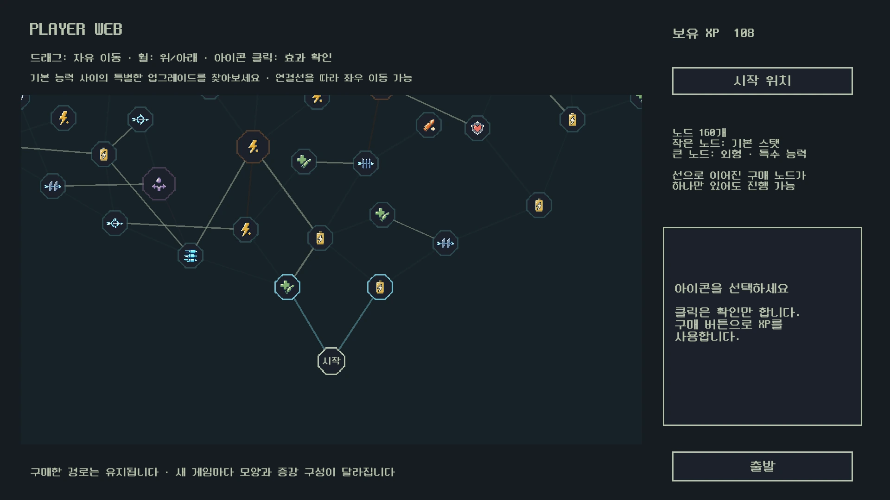
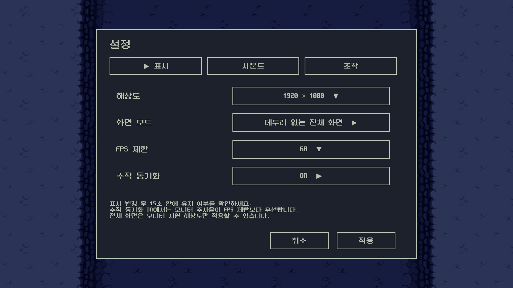
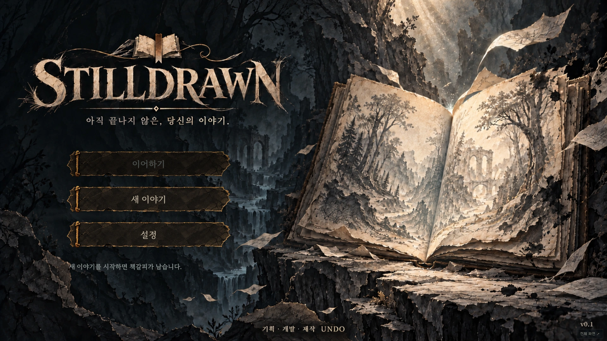
종이 세계를 탐색하고, 새 능력을 얻어 이전에 갈 수 없던 구역으로 돌아가는 메트로배니아입니다.
QA · 능력 해금·지도 입력 분리능력 해금·지도 포커스 확인 · 전체 진행 경로 추가 검증 필요
제작 환경 Unity · C#
담당 범위 1인 개발 중 · 맵·능력 게이트 구현과 테스트
종이 세계를 탐색하고, 새 능력을 얻어 이전에 갈 수 없던 구역으로 돌아가는 메트로배니아입니다.
로직 4건 + WebGL 3건 PASS
지도 포커스 전후 플레이어 좌표가 유지됨을 확인했습니다.
능력 획득 전후에 같은 지형의 통과 조건이 달라지는지, 재방문 때 지도와 수집 상태가 일치하는지 살펴볼 수 있습니다.
사전 조건 격파 기록·획득 능력 모두 비어 있음
기대 대시 보상을 획득할 수 없다.
관찰 격파 기록이 비어 있을 때 대시 보상은 잠김.
사전 조건 격파 기록에 47번만 추가
기대 대시는 허용되고 패링은 계속 잠겨 있다.
관찰 47번 격파 기록에서 대시는 해금, 패링은 잠김.
사전 조건 벽 점프 미획득, 수호자 1번 격파 기록 없음
기대 격파 전에는 잠겨 있고 격파 후에는 획득할 수 있다.
관찰 1번 격파 전 벽 점프 잠김, 격파 후 해금.
사전 조건 격파 기록 없음, 획득 능력에 walljump 보유
기대 기존 보유자의 벽 점프 해금 조건이 유지된다.
관찰 격파 기록이 없어도 walljump 보유 시 해금 조건이 충족됐다.
사전 조건 WebGL 빌드, 테스트 위치 (236,131) 부근, 지도 닫힘
기대 초기 배율은 1배이며 지도가 열린 동안 플레이가 정지한다.
관찰 M 입력 후 지도 배율 1, 일시정지 참.
사전 조건 탐험 지도가 1배로 열린 상태, 플레이어 좌표 기록
기대 3배로 확대되고 지도 조작으로 플레이어 위치가 변하지 않는다.
관찰 배율 1 → 3. 클릭 전후 플레이어 좌표 (236.50, 130.35)로 동일.
사전 조건 내 위치 포커스로 3배 확대된 상태
기대 닫으면 재개되고 재열면 다시 정지한다. 재진입 시 3배 배율을 유지한다.
관찰 닫기 후 일시정지 해제. 다시 열면 정지 상태이며 배율 3을 유지했다.
P1 · 보스 보상 해금과 저장 복원으로 필수 경로가 막히는지 확인한다. P2 · 지도 조작이 플레이어 이동과 섞이지 않는지 검사한다.
확인한 범위 SD-01~04 · 능력 해금과 기존 보유 상태를 로직으로 확인했다. SD-05~07 · WebGL 지도 열기·위치 포커스·재진입을 확인했다.
다음 검증 게임 화면에서 능력 획득 → 새 통로 통과 → 이전 구역 재방문 → 종료·재접속을 수행하고 보유 능력과 위치를 비교한다.
남은 확인 대시 획득 전후 통로 통과, 지도 확대·축소와 위치 복원 전체 절차, 조작 안내와 실제 공격 입력의 화면 테스트 3건은 미실행이다.
수정·배포 판단 필수 능력 소실이나 진행 경로 차단이 재현되면 저장 데이터 호환성과 해당 구역 진입까지 확인한 후 배포를 판단한다.
후속 화면 테스트 · 케이스별 실행 상태
화면 절차 미실행
관련 실행: SD-05~07에서 지도 열기·위치 포커스·재진입 확인. 아래 확대·축소를 포함한 전체 절차는 미실행입니다.
화면 절차 미실행
화면 절차 미실행
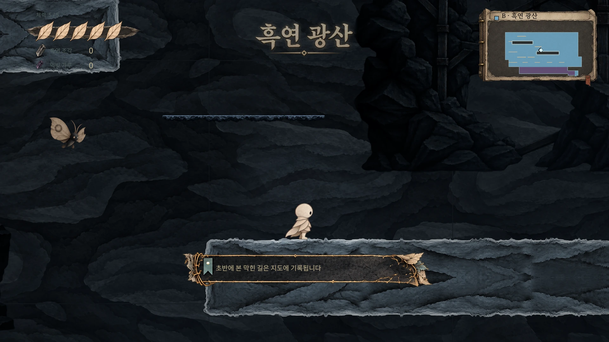
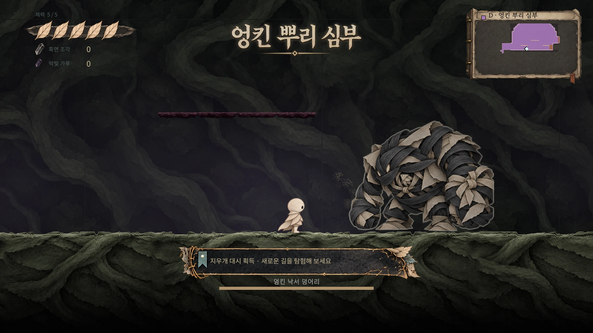
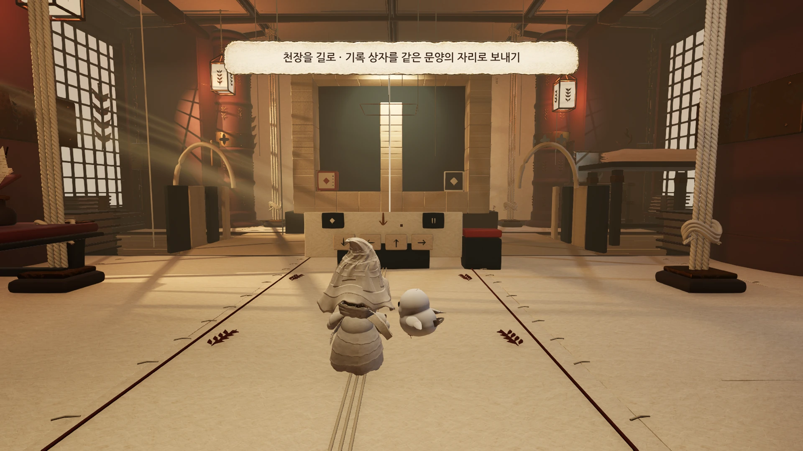
중력 방향을 바꿔 기록 상자를 목표 지점에 놓으며 책 속 공간을 탐험하는 3D 퍼즐입니다.
QA · 중력 전환·퍼즐 진행 조건중력·충돌·목표 판정 테스트 설계 · 실행 결과 미제시
제작 환경 Unity · C#
담당 범위 3인 팀 · 공간·퍼즐 진행 구조 기획
중력 방향을 바꿔 기록 상자를 목표 지점에 놓으며 책 속 공간을 탐험하는 3D 퍼즐입니다.
화면 테스트 설계 · 케이스별 실행 결과 미제시
중력 변경, 기록 상자 배치와 목표 판정을 검증할 조건을 정리했습니다.
중력을 연속으로 전환할 때 상자가 벽에 멈추는 위치와 목표 판정이 일치하는지 살펴볼 수 있습니다.
중력 변경 중 입력 중첩, 상자의 벽 접촉과 목표 진입을 우선 확인합니다. 실패 시 퍼즐 진행 자체가 막힐 수 있습니다.
시작 배치·중력 방향·입력 순서를 고정하고 전후 좌표, 목표 판정, 재시작 결과를 기록합니다.
현재 자료는 테스트 설계입니다. 재현 회차와 관찰값을 확보한 뒤 결과를 기록합니다.
설계안 · 실행 결과 미기록
주사위로 보드를 이동하며 코인과 땅을 관리하는 실물 보드게임입니다.
QA · 턴 규칙·자원·종료 조건턴·자원·종료 조건 테스트 설계 · 실행 결과 미기록
제작 환경 실물 보드게임 · 룰북·보드·구성품
담당 범위 1인 제작 · 턴 규칙과 구성품 설계
주사위로 보드를 이동하며 코인과 땅을 관리하는 실물 보드게임입니다.
보드게임 · 테스트 3건 설계
실물 규칙과 구성물을 기준으로 조건을 나눴습니다. 실행 결과는 아직 기록하지 않았습니다.
텔레포트로 도착한 칸의 처리 순서, 마지막 턴의 소유권과 승리 판정을 룰북과 대조할 수 있습니다.
턴 순서와 자원 지급, 승리 조건의 충돌을 우선 확인합니다. 같은 상황에서 플레이어마다 다른 판정이 나오지 않아야 합니다.
참여 인원·초기 자원·주사위 결과·턴 순서를 기록하고, 규칙서의 판정과 실제 진행을 대조합니다.
현재 자료는 테스트 설계입니다. 재현 회차와 관찰값을 확보한 뒤 결과를 기록합니다.
설계안 · 실행 결과 미기록
목적지별 이동 시간과 신호 대기를 비교하고, 선택한 보행 경로를 지도에서 확인하는 Figma 프로토타입입니다.
QA · 동의 분기·목적지 선택 흐름Figma 동의·목적지 선택 흐름 확인 · 실제 GPS·인증 제외
제작 환경 Figma · 화면 전환 프로토타입
담당 범위 단독 기획 · 사용자 흐름과 Figma 프로토타입 제작
목적지별 이동 시간과 신호 대기를 비교하고, 선택한 보행 경로를 지도에서 확인하는 Figma 프로토타입입니다.
Figma UI 5건 PASS · 2건 미실행
비회원 진입부터 경로 선택까지 확인했습니다. 실제 인증·GPS 기능은 검증 범위 밖입니다.
비회원 이용 동의 후 지도가 열리는지, 목록에서 선택한 목적지와 지도에 표시된 경로가 일치하는지 확인할 수 있습니다.
비회원으로 이용 약관에 동의하면 주변 신호의 남은 시간이 지도에 나타납니다. 목적지 목록을 펼쳐 이동 시간과 신호 대기를 비교하고, 신림역을 선택하면 초록색 경로가 표시됩니다.
Figma에서 직접 체험하기 ↗사전 조건 Figma 시작 프레임 363-4866
기대 이용 동의 화면 363-4854로 이동한다.
관찰 비회원 로그인 전 363-4866 → 클릭 후 363-4854
사전 조건 체크박스를 선택하지 않은 이용 동의 화면
기대 현재 이용 동의 화면에 머문다.
관찰 동의 상자 미선택 / 동의 버튼 클릭 후 363-4854
사전 조건 이용 동의 화면, 체크 해제 상태
기대 주변 신호가 보이는 지도 프레임 363-4580이 열린다.
관찰 모두 동의 → 동의합니다 클릭 / 도착 프레임 363-4580
사전 조건 지도에서 목록이 접힌 상태
기대 같은 지도 위에 신림역 16분·서원역 6분·우리집 3분이 표시된다.
관찰 지도 프레임 363-4580 유지 / 목록 영역 색상 변경 9889픽셀 (286×120) / 캡처에서 신림역 16분·서원역 6분·우리집 3분 확인
사전 조건 목적지 목록이 펼쳐진 상태
기대 신림역 경로 프레임 363-4442가 열리며, 목록을 접어도 초록색 보행 경로가 보인다.
관찰 신림역 선택 363-4442 / 목록 접기 후 363-4442 / 경로선 표시 유지 확인
P1 · 이용 동의와 지도 진입의 분기를 확인한다. P2 · 목적지 선택·목록 닫기 후 안내 경로가 유지되는지 검사한다.
확인한 범위 GW-01~05 · Figma 재생 화면의 비회원 진입·동의·지도·경로 선택을 확인했다.
다음 검증 SNS 버튼의 연결 프레임과 작은 화면에서의 안내·버튼 판독을 확인한다. 네트워크 인증·실제 위치·신호 시간은 구현 앱이 준비된 뒤 별도 검증한다.
남은 확인 SNS 연결과 작은 화면 판독 2건은 미실행이다. 현재 결과의 범위는 Figma 화면 전환이다.
수정·배포 판단 필수 동선의 연결 누락이나 동의 분기 오류가 발견되면 수정 후 같은 시작 프레임에서 재검증한다.
후속 화면 테스트 · 케이스별 실행 상태
화면 절차 미실행
일부 확인 · GW-01~03에서 비회원 진입과 동의 후 지도 전환 확인. 계정 상태 표시는 추가 확인 필요.
화면 절차 미실행
내가 접은 종이의 형상이 비행 성능으로 이어지는 게임입니다. 3D 접기·비행·98개 연구 노드를 연결하고, 형상 복원과 성장 데이터의 정합성을 검증합니다.
QA · 형상 복원·비행 정산·연구 구매접기 복원·구매·저장 복구 검사 · 마우스 접기 전체 흐름 추가 검증 필요
제작 환경 Unity · C#
담당 범위 1인 개발 중 · 접기·비행·연구 시스템 구현과 테스트
직접 접은 기체로 날고, 착륙 보상으로 다음 비행을 설계합니다.
자동 검사 + Windows 빌드 확인
접기·비행·98개 연구 노드를 검사했습니다. 마우스 접기 전체 흐름과 모든 조합의 밸런스는 추가 검증 대상입니다.
종이를 접는 과정이 기체 제작과 비행으로 이어집니다. 접힌 형상에서 발사·관성·하강·상승·충돌 관련 성능을 계산해 실제 비행에 반영합니다. 비행 거리로 얻은 연구점은 98개 노드의 연구 웹에 투자하며, 선행 연구를 구매하면 다음 후보가 열립니다.
접기 각도와 종이층에 따라 면을 나누고 회전시키면서 종이 면적과 겹침 순서를 유지해야 합니다. 되돌리기와 저장 복원에서도 같은 형상이 재구성돼야 하며, 완성된 기체의 외형·손에 잡는 위치·발사 궤적·성능을 함께 연결해야 합니다.
비행에서는 속도와 고도, 항력, 상승·활공 전환을 함께 계산합니다. 연구 효과와 종이 형상이 적용돼도 값이 비정상적으로 증가하거나 비행이 끝나지 않는 상황을 막아야 합니다. 구매 비용·소유 기록과 착륙 보상·정산 완료 상태도 각각 함께 저장되도록 구성했습니다.
같은 입력이라도 접은 형상과 연구 조합에 따라 결과가 달라집니다. 기준 기체와 입력 조건을 고정한 비교, 접기 전후의 면적·종이층 검사, 저장 후 형상 재현, 연구점의 경계값 검사를 나눠 수행합니다. 기존 검사 코드와 실제 Windows 빌드를 함께 사용해 계산 결과와 게임 화면을 대조합니다.
2026.11.10 · 검사 묶음 2종 × 10회 / 20회 PASS
Unity 6000.5.3f1의 격리 복사본에서 연구 경제 검사와 접기 검사를 반복했습니다. 98개 노드를 모두 구매한 총 비용은 337,050점이며, 1,000,000점에서 662,950점이 남는지 대조합니다. 저장 쓰기 실패 시 차감·성장을 취소하고 재시도와 디스크 재로딩 후 중복 정산이 없는지도 확인합니다.
20회는 두 검사 묶음의 반복 횟수입니다. 서로 다른 테스트 케이스 20개나 수동 플레이 20회를 뜻하지 않습니다. 로컬 미커밋 변경을 포함하므로 커밋 해시와 파일별 SHA-256을 함께 기록했습니다. 검사 시간은 게임 성능 측정값으로 사용하지 않습니다.
실제 입력을 이용한 접기 전체 흐름·출시 빌드 회귀·체감 밸런스·장시간 성능은 별도 검증 대상입니다.
2026.11.10 소스 기준 · 격리된 저장 데이터로 자동 검사 및 Windows 빌드 실행
자동 검사는 게임의 접기·발사·구매 메서드를 호출했습니다. 촬영용 다트형 기체와 연구점은 테스트 데이터입니다. 마우스로 접는 전체 조작 흐름과 모든 연구 조합의 체감 밸런스는 추가 검수 대상입니다.
메이플키우기 자동화 경험을 바탕으로 정상·경계·예외 조건을 나눈 후속 테스트 설계입니다.
항목을 펼치면 사전 조건·절차·기대 결과·수집할 증거를 볼 수 있습니다.
8개 테스트 설계
이 판정 기준은 후속 자동화 검증을 위한 설계안입니다. 임계값·대기 시간은 설계용 조건이며 기존 도구의 설정값을 뜻하지 않습니다. 실행 전 게임 버전·해상도·대상 영역·비용을 기록하고, 실행 후에만 PASS·FAIL을 부여합니다.
OCR 판독 실패나 버튼 오탐은 재화 결함으로 확정하지 않습니다. 원본 화면·판독값·탐지 위치를 비교한 뒤, 같은 조건을 수동으로 확인하는 후속 절차를 설계했습니다.
진행 불가·재화 손실·중복 지급처럼 플레이에 직접 영향을 주는 조건을 먼저 확인합니다. 저장 복원·재접속·호환성·결제 흐름은 환경과 판정 근거를 확보한 후 별도로 실행할 범위입니다.
플레이 흐름과 데이터 변경을 함께 읽습니다. 진행 불가·재화 손실·중복 지급 위험을 먼저 고르고, 정상·부족·중복·중단 조건의 기대값을 나눕니다.
Rushitadel은 동력 임계값의 직전·동일·초과를, 데굴데굴은 이동·되돌리기·초기화를 나눴습니다. 사전 상태와 입력 순서, 수치로 비교할 기대값을 기록합니다.
쓰레기 집게 소년은 대기열·보상 호출 수를, FlyEditor는 잔액과 소유 상태를 비교했습니다. 진주도둑들 보상 문제는 문서나 스프레드시트로 전달했습니다. OCR 실패는 게임 결함과 구분합니다.
수정한 조건과 연결된 흐름을 함께 확인합니다. 진주도둑들에서는 중도 이탈 미지급과 클리어·패배 지급을 비교했습니다. 미실행 항목과 남은 위험은 결과에 함께 표시합니다.